Updates
- [July 2025] Our paper Enter the Mind Palace got accepted to CoRL 2025!
- [July 2025] Our workshop proposal at CoRL 2025 got accepted — 2nd Workshop on Safe and Robust Robot Learning for Operation in the Real World.
- [June 2025] I attended RSS 2025 in Los Angeles.
- [May 2025] Attending ICRA 2025 in Atlanta, presenting two papers and organizing a workshop.
- [May 2025] We organized the workshop Towards Reliable and Trustworthy Embodied AI in Everyday Scenarios at ICRA 2025.
- [January 2025] Two papers accepted at ICRA 2025.
- [November 2024] Our Addendum to Nebula paper is published at IEEE Transcation on Field Robotics.
- [October 2024] I was at TED AI event in San Francisco and giving Field AI robot demo. Our talk will be released soon!
- [October 2024] I was at IROS in Abu Dhabi, UAE, presenting our SB2G paper.
- [October 2024] I presented a poster at Bay Area Robotics Symposium (BARS) on SayComply.
- [July 2024] I was at RSS in Delft, Netherlands, presenting our SEEK paper.
- [June 2024] Our paper on semantic-aware object search got accepted to IROS 2024.
- [June 2024] Our work is featured in IEEE Spectrum's Video Friday.
- [May 2024] Our paper on semantic reasoning for object goal navigation got accepted to RSS 2024!
- [January 2024] I gave a research talk at Stanford AA 229 course.
- [October 2023] I presented a poster at Bay Area Robotics Symposium (BARS).
- [June 2023] I started a research internship at Field AI.
- [May 2023] I was at ICRA in London, UK, presenting our SBG paper.
- [May 2023] I passed the Stanford PhD qualifying exam!
- [January 2023] Our work on locomotion adaptation with semantic belief graph is accepted to ICRA 2023.
- [October 2024] I was at IROS in Kyoto, Japan, presenting our multi-robot task allocation paper.
- [June 2022] Our work on capability-aware task allocation got accepted to IROS 2022.
- [October 2021] I gave a talk on lessons learned in the SubT Challenge at Stanford MSL.
- [September 2021] Excited to start my PhD at Stanford!
|
Research
My research interests lie in enabling embodied AI for robots to navigate and interact with unstructured environments using risk-aware autonomy and large foundation models.
I am a full-stack roboticist with experience in developing cutting-edge algorithms for perception, planning, control, and communication, as well as deploying robots in the field for real-world use cases.
|
|
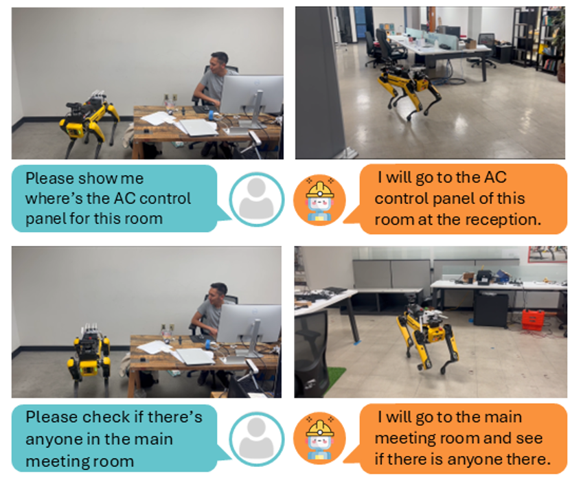
|
SayComply: Grounding Field Robotic Tasks in Operational Compliance through Retrieval-Based Language Models
Muhammad Fadhil Ginting, Dong-Ki Kim, Sung-Kyun Kim, Bandi Jai Khrisna,
Mykel Kochenderfer, Shayegan Omidshafiei, Ali-akbar Agha-mohammadi
Under review, 2024
Arxiv, Website
We propose a task planning method for robots that must comply with operational manuals in real-world settings using a tree-based retrieval augmented generation technique.
|
|
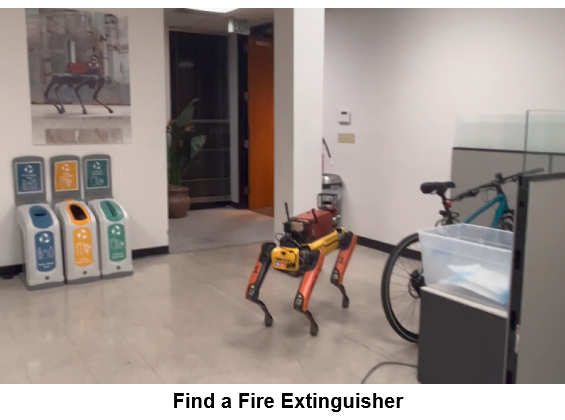
|
SEEK: Semantic Reasoning for Object Goal Navigation in Real World Inspection Tasks
Muhammad Fadhil Ginting, Sung-Kyun Kim, David Fan, Matteo Palieri,
Mykel Kochenderfer, Ali-akbar Agha-mohammadi
Robotics: Science and Systems, 2024
Arxiv
We propose a probabilistic planning method for object-goal navigation that uses relational semantic knowledge and prior spatial configuration for real-world inspection.
|
|
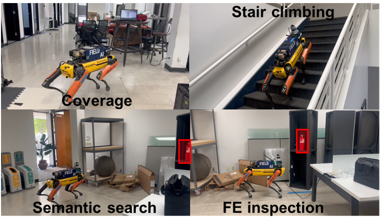
|
Semantic Belief Behavior Graph: Enabling Autonomous Robot Inspection in Unknown Environments
Muhammad Fadhil Ginting, David D. Fan, Sung-Kyun Kim,
Mykel J. Kochenderfer, and Ali-akbar Agha-mohammadi
IEEE/RSJ International Conference on Intelligent Robots and Systems (IROS), 2024
Arxiv
We propose a belief-space task planning framework for semantic-based navigation in real world inspection.
|
|
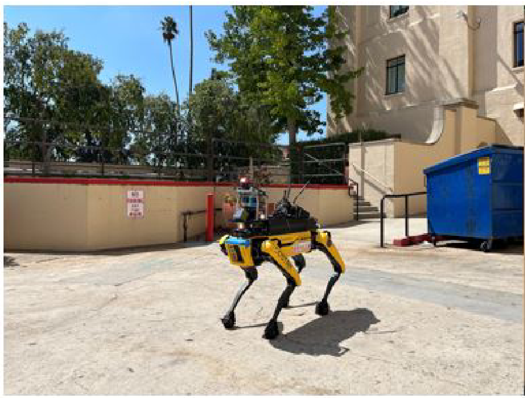
|
Safe and Efficient Navigation in Extreme Environments using Semantic Belief Graphs
M. F. Ginting, S. K. Kim, O. Peltzer, J. Ott, S. Jung, M. J. Kochenderfer, and A. Agha-mohammadi
IEEE International Conference on Robotics and Automation (ICRA), 2023
Arxiv
|
|
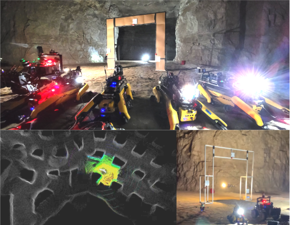
|
Capability-Aware Task Allocation and Team Formation Analysis for Cooperative Exploration of Complex Environments
M. F. Ginting, K. Otsu, M. J. Kochenderfer, and A. Agha-mohammadi
IEEE/RSJ International Conference on Intelligent Robots and Systems (IROS), 2022
Paper
|
|
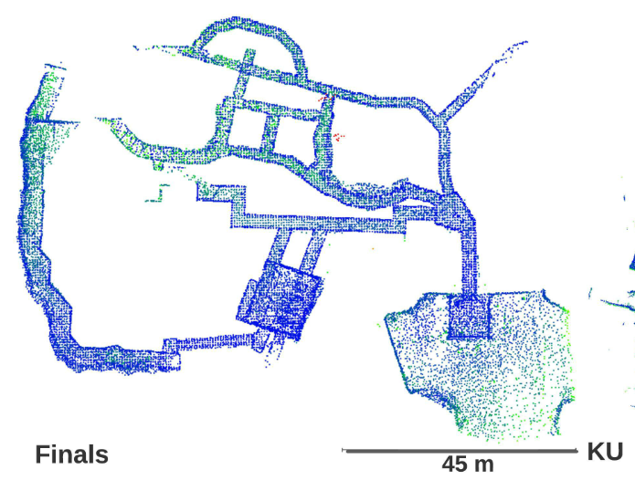
|
LAMP 2.0: A Robust Multi-Robot SLAM System for Operation in Challenging Large-Scale Underground Environments
Y. Chang, K. Ebadi, C. E. Denniston, M. F. Ginting, A. Rosinol, A. Reinke, M. Palieri, J. Shi, A. Chatterjee,
B. Morrell, A. Agha-mohammadi, L. Carlone
IEEE Robotics and Automation Letters (RA-L), 2022
Arxiv
|
|
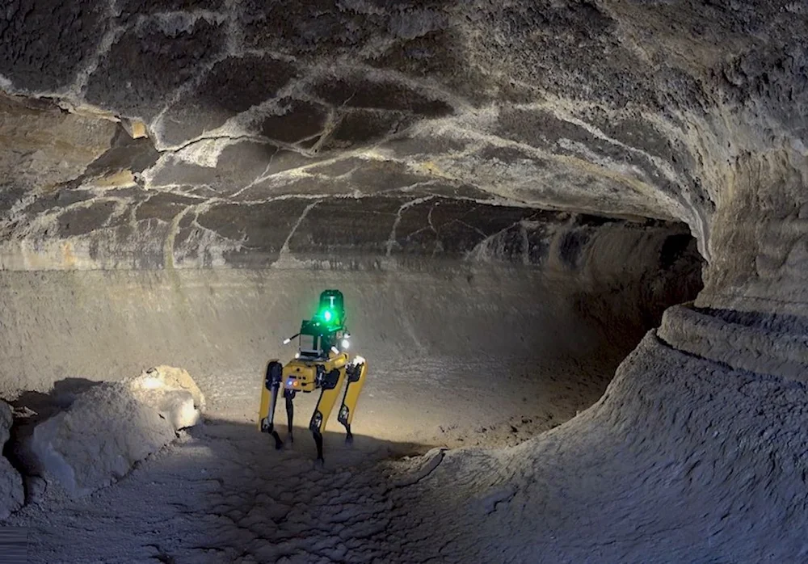
|
Autonomous Mapping and Characterization of Terrestrial Lava Caves Using Quadruped Robots: Preparing for a Mission to a Planetary Cave
J. G. Blank, B. Morrell, A. Bouman, T. Touma, M. F. Ginting, C. Patterson, A. Agha-mohammadi
Workshop on Terrestrial Analogs for Planetary Exploration, 2021
|
|
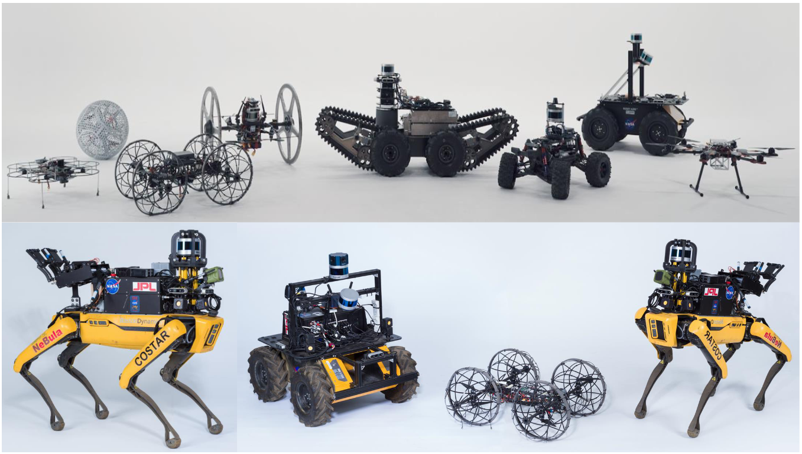
|
Nebula: Quest for Robotic Autonomy in Challenging Environments; Team CoSTAR at the DARPA Subterranean Challenge
Journal of Field Robotics, 2021
Arxiv
|
|
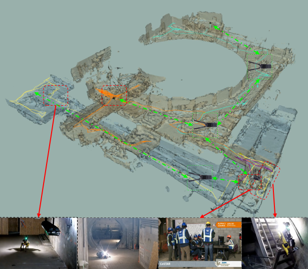
|
CHORD: Distributed Data-sharing via Hybrid ROS 1 and 2 for Multi-robot Exploration of Large-scale Complex Environments
M. F. Ginting, K. Otsu, J. A. Edlund, J. Gao, and A. Agha-Mohammadi
IEEE Robotics and Automation Letters (RA-L), 2021
Paper
|
|
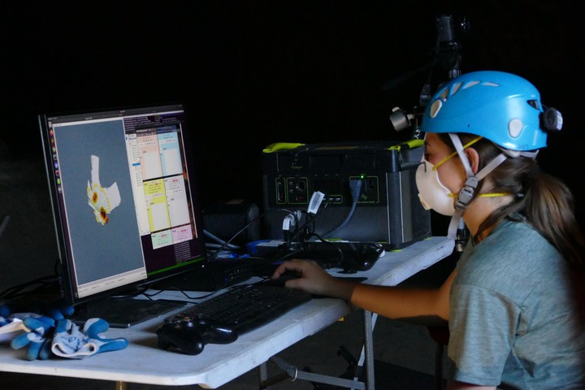
|
Copilot MIKE: An Autonomous Assistant for Multi-Robot Operations in Cave Exploration
M. Kaufmann, T. S. Vaquero, G. J. Correa, K. Otsu, M. F. Ginting, G. Beltrame, A. Agha-Mohammadi
IEEE Aerospace Conference, 2021
Paper
|
|
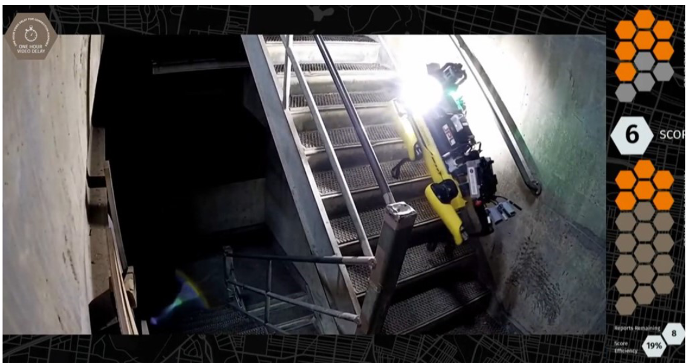
|
Autonomous Spot: Long-range Autonomous Exploration of Extreme Environments with Legged Locomotion
M. F. Ginting*, A. Bouman*, N. Alatur*, M. Palieri, D. D. Fan, T. Touma, T. Pailevanian, S. K. Kim,
K. Otsu, J. Burdick, and A. Agha-Mohammadi
IEEE International Conference on Intelligent Robots and Systems (IROS), 2020
Best Paper Award on Safety, Security, and Rescue Robotics
Paper
|
|
{kind=link}